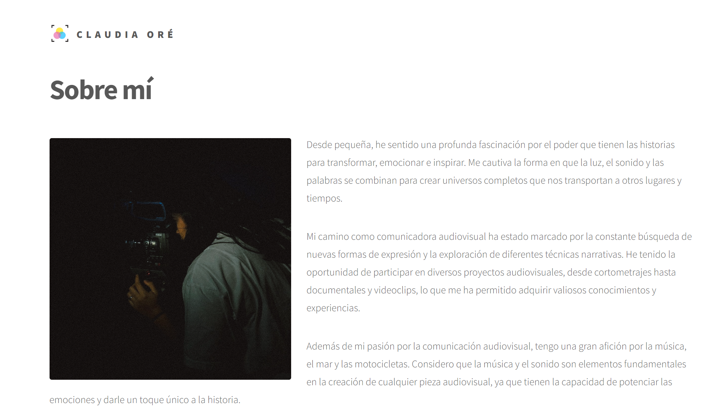
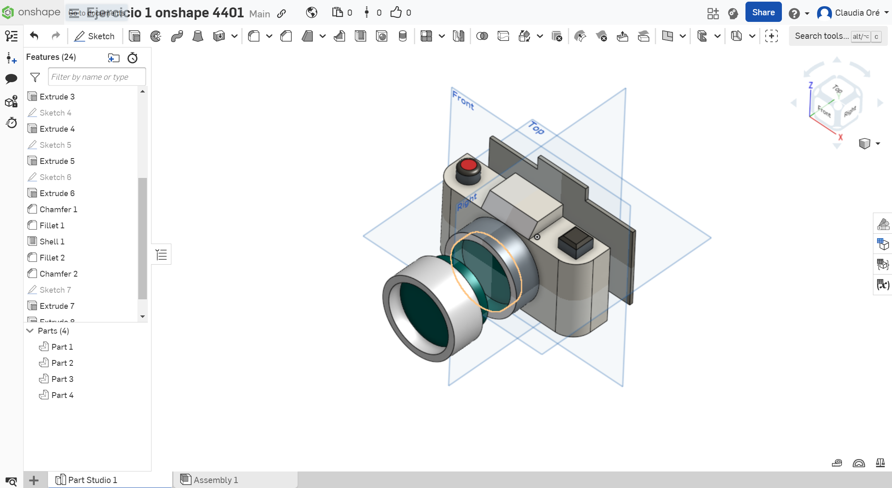
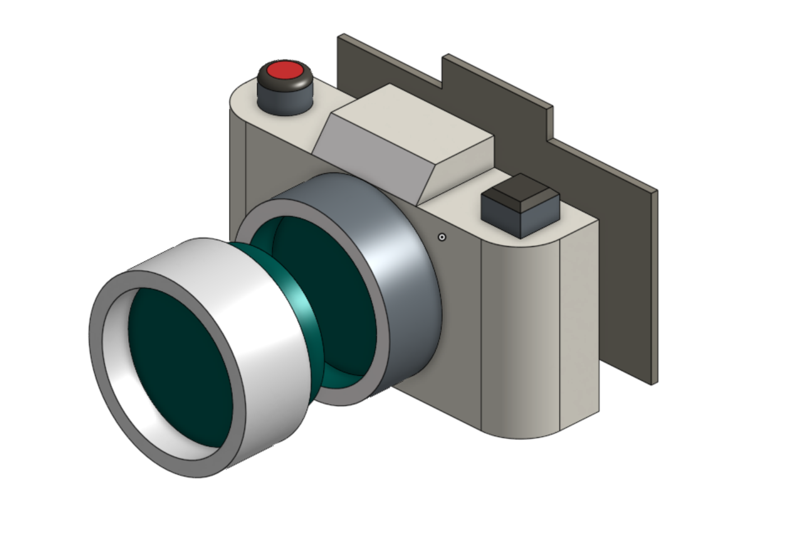
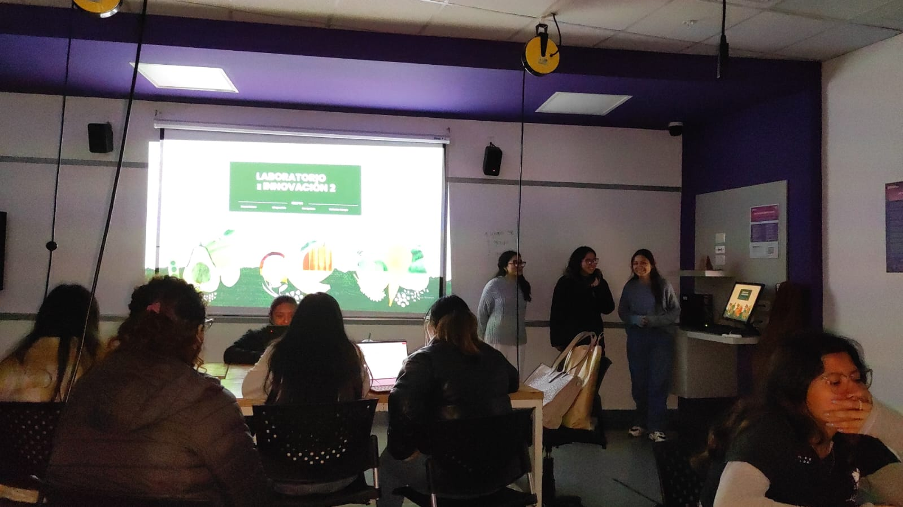
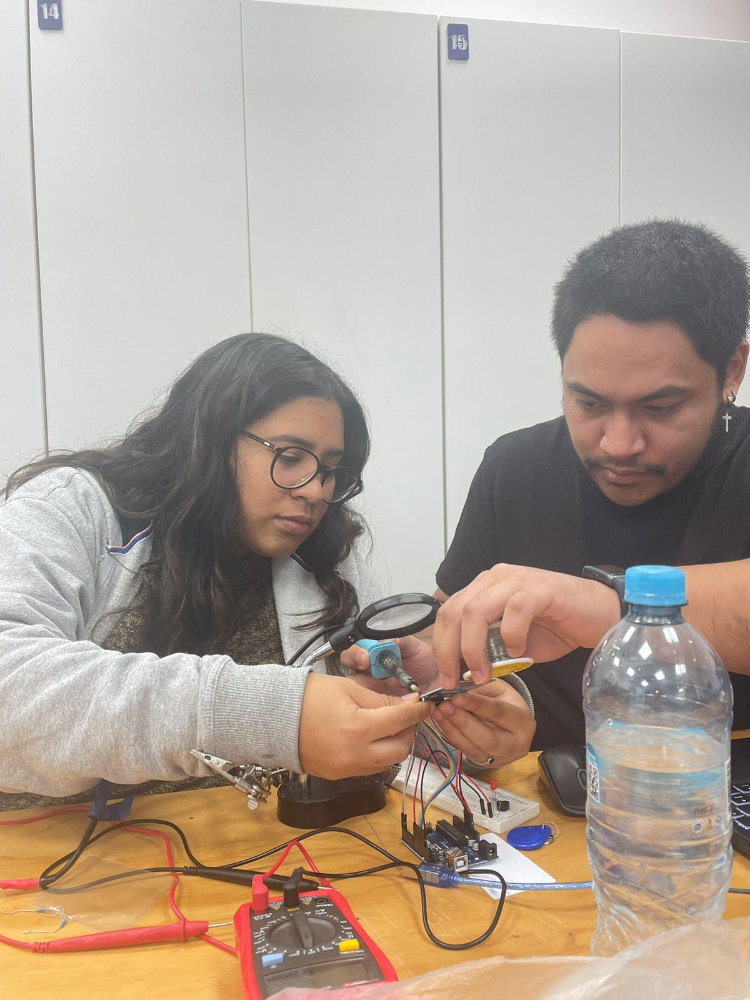
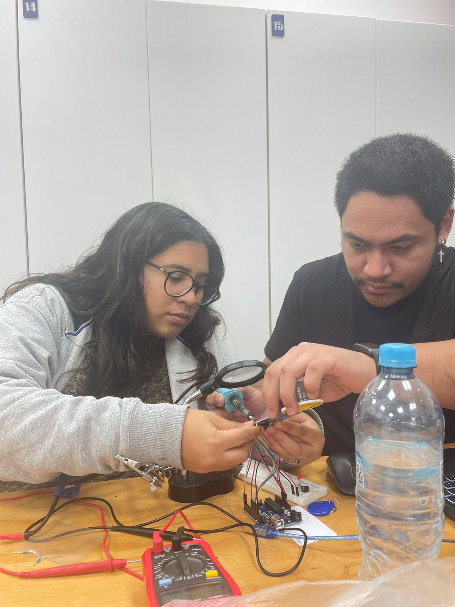
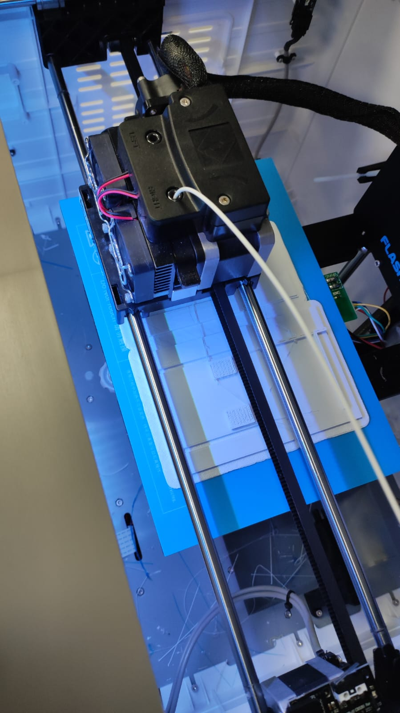
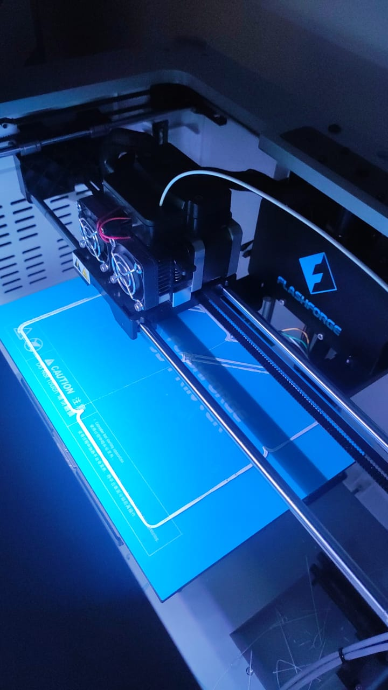
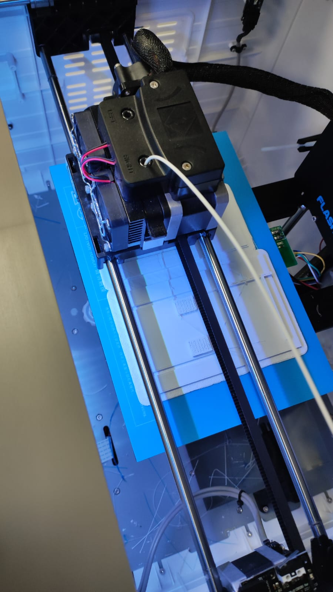
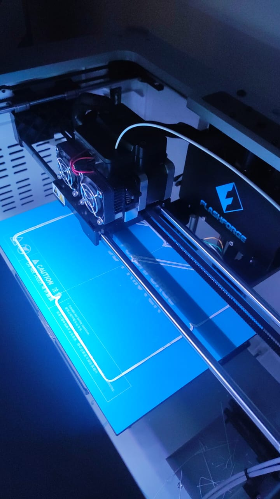

Bitácora

Acá registraré el progreso de mis clases.
Semana 1:
Comenzamos introduciéndonos al curso y aprendiendo términos de páginas web básicas usando HTML, CSS y JavaScript. También hablamos sobre GitHub, que es como un diario donde guardamos nuestro trabajo.
Semana 2:

En esta semana, nos enfocamos más en cómo queremos que se vea nuestra página web. Descargamos algunas herramientas que nos ayudarán a hacerla más atractiva y empezamos a hacer cambios para que se adapte a lo que queremos.
Semana 3:

Hicimos nuestra página en GitHub y empezamos a hacer cambios para que se vea como queremos.
Semana 4:
Aprendimos a poner fotos en diferentes lugares de nuestra página y a hacer que se vean más bonitas. También aprendimos a poner enlaces que nos lleven a nuestras redes sociales.
Semana 5:

Cada grupo presentó lo que quería hacer en el futuro. Usamos encuestas y videos para entender mejor lo que quería la gente.
Semana 6:
 
Aprendimos a hacer dibujos en 3D con un programa llamado OnShape.
Semana 7:

Hablamos sobre cómo organizar la información en nuestra página y cómo hacer que le guste a la gente que la vea.
Semana 8:


Hicimos maquetas de cómo queremos que se vea nuestra página en la vida real. También aprendimos cosas sobre electricidad que nos ayudarán con nuestro proyecto.
Semana 9:
Aprendimos sobre cómo funcionan los circuitos eléctricos y diseñamos un formulario para preguntarle a la gente qué piensa de nuestro proyecto.
Semana 10:

Terminamos esta parte del proyecto mostrando lo que hemos hecho hasta ahora y lo que queremos hacer a continuación. También compartimos todo lo que hemos aprendido en una página de Google.
Semana 11:
falte
Semana 12:
Aprendimos sobre "IOT" el Internet de las Cosas, debatimos de como antes el internet era para las personas y ahora la utilizar las casa con de asistencia artificial que tenemos en casa y se conectan via wifi para controlar un aparato./p>
Semana 13:


Aprendimos sobre realidad virtual y realidad aumentada, vimos tambien escaneo 3d y me escanee en KIRI ENGINE
Semana 14:


 

Compramos los componentes para prototipar, en clase armamos el circuito, probamos el codigo y soldamos algunos cables, las conexiones estaban bien pero el RFID no leia porque nos habia venido fallado.


Mientras avanzamos con el armado del prototipo, se avazanvó el diseño 3D final de las piezas del collar para su impresion. Estimamos tiempos de impresión
EXTRA


Durante la semana hicimos un casting de vacas para el proyecto. La Vaca nro. 3 quedo seleccionada.
Semana 15:

 




Ya habiendo armado el circuito y configurado el codigo, imprimimos la estructura interna del collar donde irá el circuito, trajimos a la vaca seleccionada para medir el prototipo y montamos el arduino en la primera parte de la estructura.
Semana 16:
expo